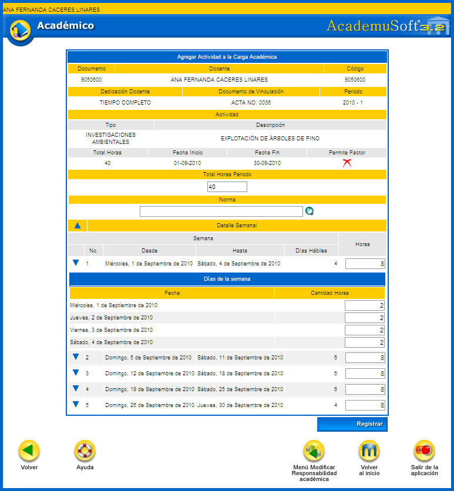
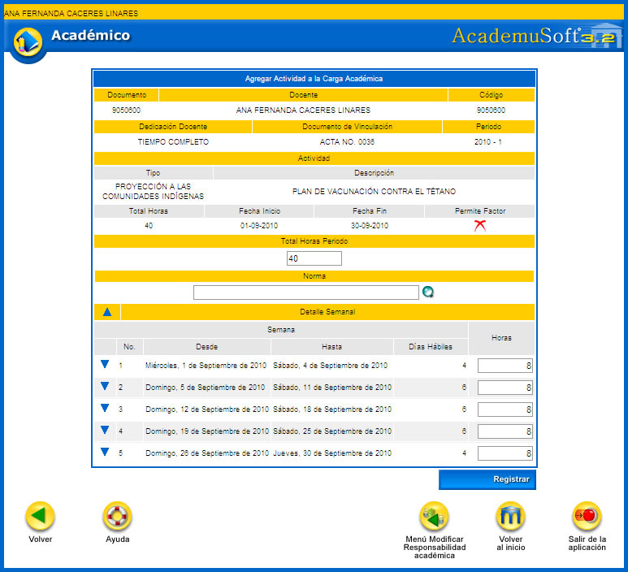
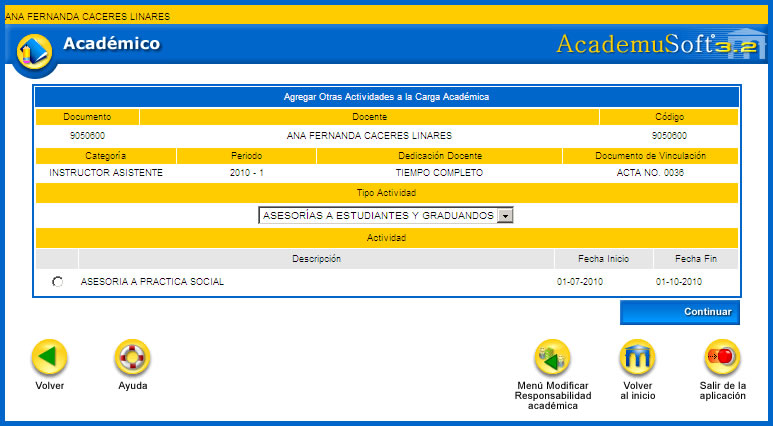

5.3.2 Investigación. Esta funcionalidad permite al docente gestionar las actividades de Investigación asociadas a su carga. Están relacionadas directamente con la Actividad de Tipo Investigación y está directamente vinculada con la unidad regional o académica adscrita al docente. Dispone de las opciones Ver, Agregar, Modificar y Eliminar.
Opción Ver: permite previsualizar la información que se ha diligenciado para las actividades de investigación.
Opción Agregar: con esta opción se pueden agregar las actividades de tipo investigación. Inicialmente se debe elegir el TIPO DE ACTIVIDAD general. Con esta selección se listan las actividades con las respectivas fechas de inicio y de fin de las mismas. Se debe seleccionar la actividad y luego dar clic sobre la opción Continuar.
Se despliega una interfaz en la cual se muestra la información detallada de la actividad mostrando el total de horas, rango de fechas, si se permite o no factor y un campo para ingresar el TOTAL HORAS PERIODO. La cantidad que acá se indica no debe ser superior al total de horas ya gestionado por el administrador del sistema (o la persona encargada de la distribución de actividades de los docentes).
Al dar clic sobre la lupa  se puede indicar la norma asociada con este proceso. La norma no es obligatoria de ser gestionada.
se puede indicar la norma asociada con este proceso. La norma no es obligatoria de ser gestionada.
Al dar clic sobre el botón de la flecha se puede desplegar el listado de los días por rango de fechas y los días hábiles de la semana. Al frente se muestra un campo que representa las horas en las que se desarrolla la actividad. Estas horas pueden ser modificadas por el profesor, además si se desea, se puede dar clic sobre la flecha que está al frente de cada rango y se listarán los días hábiles de la semana, de igual forma se puede indicar la cantidad de horas por día. Finalizada la gestión del detalle del desarrollo de la actividad, se debe dar clic sobre la opción Registrar. El sistema solicita la confirmación del proceso, si la respuesta es afirmativa se emitirá un mensaje indicando el éxito del mismo.

Opción Modificar: permite actualizar los datos asociados con la actividad de tipo investigación. Se pueden cambiar el total de horas del periodo, las horas asociadas con los rangos de fechas del Detalle Semanal y las horas de cada día. Finalizados los cambios se debe dar clic sobre la opción Registrar. El sistema solicita la confirmación del proceso, si la respuesta es afirmativa se emitirá un mensaje indicando el éxito del mismo.
Opción Eliminar: esta opción permite al docente borrar un registro ya creado. El sistema solicita confirmación del borrado del registro, si la respuesta es afirmativa se emitirá un mensaje indicando el éxito del proceso.
Se aclara que la gestión de las horas por rangos y días es igual en todas las demás actividades asignadas al profesor.
5.3.3 Proyección Social. Esta funcionalidad permite al docente gestionar las actividades de Proyección Social asociadas a su carga. Están ligadas directamente con la Actividad de Tipo Proyección social vinculada con la unidad regional o académica adscrita al docente. Dispone de las opciones Ver, Agregar, Modificar y Eliminar.

Opción Ver: permite previsualizar la información que se ha diligenciado para las actividades de proyección social.
Opción Agregar: con esta opción se pueden agregar las actividades de tipo proyección social. Inicialmente se debe elegir el TIPO DE ACTIVIDAD general. Con esta selección se listan las actividades con las respectivas fechas de inicio y de fin de las mismas. Se debe seleccionar la actividad y luego dar clic sobre la opción Continuar.
Se despliega una interfaz en la cual se muestra la información detallada de la actividad mostrando el total de horas, rango de fechas, si se permite o no factor y un campo para ingresar el TOTAL HORAS PERIODO. La cantidad que acá se indica no debe ser superior al total de horas ya gestionado por el administrador del sistema (o la persona encargada de la distribución de actividades de los docentes).
Al dar clic sobre la lupa  se puede indicar la norma asociada con este proceso. La norma no es obligatoria de ser gestionada.
se puede indicar la norma asociada con este proceso. La norma no es obligatoria de ser gestionada.
Al dar clic sobre el botón de la flecha se puede desplegar el listado de los días por rango de fechas y los días hábiles de la semana. Al frente se muestra un campo que representa las horas en las que se desarrolla la actividad. Estas horas pueden ser modificadas por el profesor. Finalizada la gestión del detalle del desarrollo de la actividad se debe dar clic sobre la opción Registrar. El sistema solicita la confirmación del proceso, si la respuesta es afirmativa se emitirá un mensaje indicando el éxito del mismo.

Opción Modificar: permite actualizar los datos asociados con la actividad de tipo proyección social. Se pueden cambiar el total de horas del periodo y las horas asociadas con los rangos de fechas del Detalle Semanal. Finalizados los cambios se debe dar clic sobre la opción Registrar. El sistema solicita la confirmación del proceso, si la respuesta es afirmativa se emitirá un mensaje indicando el éxito del mismo.
Opción Eliminar: esta opción permite al docente borrar un registro ya creado. El sistema solicita confirmación del borrado del registro, si la respuesta es afirmativa se emitirá un mensaje indicando el éxito del proceso.
5.3.4 Académico-Administrativas. Esta funcionalidad permite al docente gestionar el cargo que se ha asignado a un docente desde el módulo de Carga Administrativa. El objetivo es indicar la cantidad de horas que va a laborar de acuerdo a los rangos de fechas asignados a su contratación. Dispone de las opciones Ver, Agregar, Modificar y Eliminar.
Opción Ver: permite previsualizar la información que se ha diligenciado para las actividades académico-administrativas.
Opción Agregar: con esta opción se pueden agregar las actividades de tipo académico-administrativa. Se debe seleccionar la actividad y luego dar clic sobre la opción Continuar.
Se despliega una interfaz en la cual se muestra la información detallada de la actividad mostrando el total de horas, rango de fechas y un campo para ingresar el TOTAL HORAS PERIODO. La cantidad que acá se indica no debe ser superior al total de horas cubierto por su vinculación laboral.
Al dar clic sobre la lupa  se puede indicar la norma asociada con este proceso. La norma no es obligatoria de ser gestionada.
se puede indicar la norma asociada con este proceso. La norma no es obligatoria de ser gestionada.
Al dar clic sobre el botón de la flecha se puede desplegar el listado de los días por rango de fechas y los días hábiles de la semana. Al frente se muestra un campo que representa las horas en las que se desarrolla la actividad. Estas horas pueden ser modificadas por el profesor. Finalizada la gestión del detalle del desarrollo de la actividad se debe dar clic sobre la opción Registrar. El sistema solicita la confirmación del proceso, si la respuesta es afirmativa se emitirá un mensaje indicando el éxito del mismo.
Opción Modificar: permite actualizar los datos asociados con la actividad de tipo académico-administrativa. Se pueden cambiar las horas asociadas con los rangos de fechas del Detalle Semanal y las horas por día. Finalizados los cambios se debe dar clic sobre la opción Registrar. El sistema solicita la confirmación del proceso, si la respuesta es afirmativa se emitirá un mensaje indicando el éxito del mismo.
Opción Eliminar : esta opción permite al docente borrar un registro ya creado. El sistema solicita confirmación del borrado del registro, si la respuesta es afirmativa se emitirá un mensaje indicando el éxito del proceso.
5.3.5 Otras. Esta funcionalidad permite al docente gestionar otras actividades en las que se pueden incluir otras tareas que tengan en cada entidad y/o unidad académica. Por ejemplo: acreditación, recepción de personas que desarrollan evaluación sobre los programas académicos tales como los Pares académicos, reuniones para evaluación de proyectos de grado, asesorías a estudiantes, o egresados no graduados. Dispone de las opciones Ver, Agregar, Modificar y Eliminar.
Opción Ver:permite previsualizar la información que se ha diligenciado para Otras actividades.
Opción Agregar: con esta opción se pueden agregar las actividades de tipo Otras Actividades. Inicialmente se debe elegir el TIPO DE ACTIVIDAD general. Con esta selección se listan las actividades con las respectivas fechas de inicio y de fin de las mismas. Se debe seleccionar la actividad y luego dar clic sobre la opción Continuar.

Se despliega una interfaz en la cual se muestra la información detallada de la actividad mostrando el total de horas, rango de fechas, si se permite o no factor y un campo para ingresar el TOTAL HORAS PERIODO. La cantidad que acá se indica no debe ser superior al total de horas ya gestionado por el administrador del sistema (o la persona encargada de la distribución de actividades de los docentes).
Al dar clic sobre la lupa  se puede indicar la norma asociada con este proceso. La norma no es obligatoria de ser gestionada.
se puede indicar la norma asociada con este proceso. La norma no es obligatoria de ser gestionada.
Al dar clic sobre el botón de la flecha se puede desplegar el listado de los días por rango de fechas y los días hábiles de la semana. Al frente se muestra un campo que representa las horas en las que se desarrolla la actividad. Estas horas pueden ser modificadas por el profesor. Finalizada la gestión del detalle del desarrollo de la actividad se debe dar clic sobre la opción Registrar. El sistema solicita la confirmación del proceso, si la respuesta es afirmativa se emitirá un mensaje indicando el éxito del mismo.
Opción Modificar: permite actualizar los datos asociados con la actividad de tipo Otra Actividad. Se pueden cambiar las horas asociadas con los rangos de fechas del Detalle Semanal y las horas por día. Finalizados los cambios se debe dar clic sobre la opción Registrar. El sistema solicita la confirmación del proceso, si la respuesta es afirmativa se emitirá un mensaje indicando el éxito del mismo.
Opción Eliminar: esta opción permite al docente borrar un registro ya creado. El sistema solicita confirmación del borrado del registro, si la respuesta es afirmativa se emitirá un mensaje indicando el éxito del proceso.
6. LISTADO DE ESTUDIANTES POR GRUPO
Esta funcionalidad permite que el docente previsualice un listado de alumnos por grupo asignado. Puede chequear la opción de Ver datos adicionales para mostrar las fotos y el correo de los mismos. Luego hay que hacer clic sobre la opción Continuar.

Si no se chequea el parámetro de VER DATOS ADICIONALES, el sistema muestra: nombre de materia, grupo y total de alumnos, el listado general que incluye tipo de documento, identificación. Cuenta con la opción Imprimir.

Si se chequea el parámetro de VER DATOS ADICIONALES, el sistema muestra: nombre de materia, grupo y total de alumnos, el listado completo que incluye tipo de documento, identificación, e-mail y la fotografía. Cuenta con la opción Imprimir.

Opción Imprimir: permite generar un reporte del listado de los estudiantes en formato PDF, tal como se muestra en el siguiente ejemplo:

7. CALIFICACIONES HISTÓRICAS POR DOCENTE
Funcionalidad que muestra al docente las calificaciones que él ha gestionado durante todas las contrataciones laborales que ha tenido con la institución, distribuida por periodo académico. El sistema muestra los periodos académicos en los que ha estado vinculado el docente. Se puede elegir un periodo académico, luego el sistema lista las asignaturas y enseguida aparecen los grupos. Se elige cada uno de los registros de su interés y luego se da clic sobre la opción Continuar.

El sistema despliega el listado de estudiantes que cursaron la asignatura y las calificaciones obtenidos de acuerdo al sistema de evaluación asignado a la misma. Dispone de la opción Imprimir.
Opción Imprimir: permite generar un reporte del listado de los estudiantes matriculados en periodos anteriores, se encuentra en formato PDF, tal como se muestra en el siguiente ejemplo: